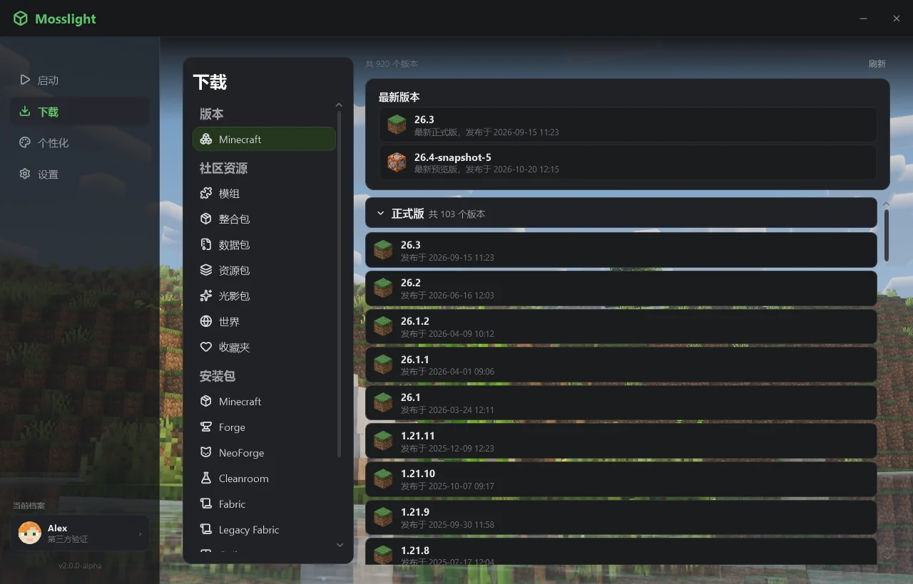
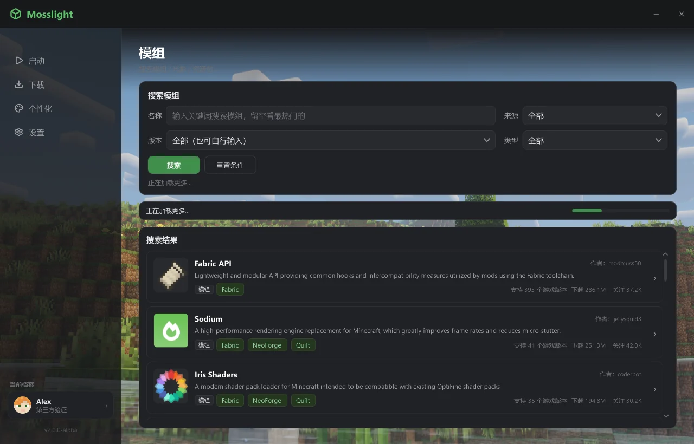

01 / LIGHT
小到可以随手更新
Release 里只有一个约 1.4 MB 的 win64.zip。解压出来就一个 Mosslight.exe，更新一次也只下这么多。
1.4 MB
WIN64.ZIP · 单文件
Mosslight Launcher 2 用 C# / WPF 重写。原版、加载器、整合包、Modrinth 资源、账户和外观，都在一个窗口里。
Windows 10 1809+ / x64 · 需要 .NET 10 桌面运行时

实际运行界面 · 下载页
01 / 亮点
不是把功能堆在一起。是把每天都要用的那几件事，放进一个窗口里，做扎实。
Release 里只有一个约 1.4 MB 的 win64.zip。解压出来就一个 Mosslight.exe，更新一次也只下这么多。
原版、六种加载器、整合包、Modrinth 资源、账户、外观和自动更新，都在同一个窗口里。不用再装第二个软件。
核心引擎拿 1.0.0 的 Python 实现当金标准，逐值比对；自检 1302 项全部通过。
02 / 功能
从启动游戏到换一个强调色。没有插件市场，也没有第二个设置面板。
按版本要求自动挑 Java，按物理内存给推荐值，解压 natives。运行中按钮变红，一点强制结束整个进程树。
走 BMCLAPI 镜像，多线程下载、失败重试。镜像连续抽风就熔断切官方源，已下好的文件认 SHA-1 跳过。
Forge、NeoForge、Fabric、Quilt、OptiFine、LiteLoader。安装器需要的库，会提前备好。
支持 Modrinth .mrpack，也支持把 zip 直接拖进窗口：解包、装原版、装加载器，压平成一个版本文件夹。
模组、整合包、数据包、资源包、光影包。来源只有 Modrinth，可按版本和类型筛选，滚到底自动续。
离线档案、LittleSkin 网页授权 / 账号密码、自建 Yggdrasil。一个账号多个角色随时切，皮肤头像自动拉取。
深色、浅色、跟随系统；自定义强调色；背景图五种铺法；卡片透明度；7 档入场动效，也能整体关掉。
简体、繁體、English、日本語、Русский，切换立刻生效。自动更新只替换单个 exe，并做 SHA256 校验。
03 / 界面
从下载到启动，常用界面都在同一个窗口里。切换标签，看看实际截图。

模组、整合包、数据包、资源包、光影包。来源只有 Modrinth，可按游戏版本、加载器和类型筛选。
先装 .NET 10 桌面运行时（x64），不是 SDK，也不是 ASP.NET Core Runtime。装完再启动；如果还是没反应，看 Logs\launcher.log 的最后几行。
单个未签名的 exe 被启发式引擎拦下很常见。把启动器目录加入白名单即可。项目只从 GitHub Releases 分发资产，每个包都做 SHA256 校验。
先看 Logs\update.log 和 Logs\apply_update.log。实在不行，手动从 GitHub Releases 下载 zip 覆盖 Mosslight.exe；配置和账户都还在。